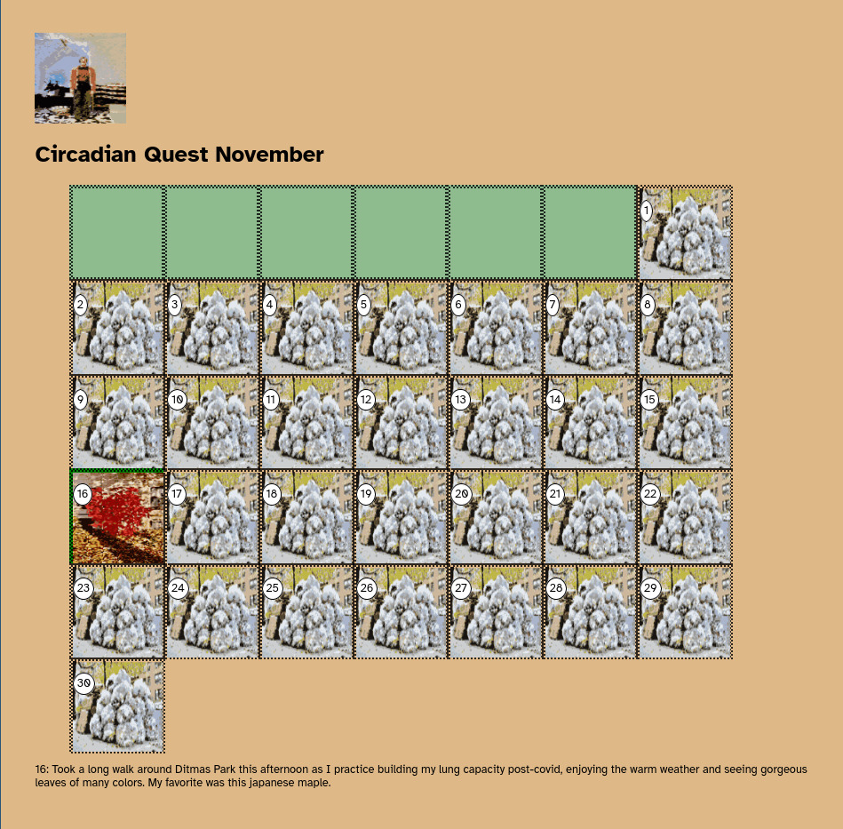

Lee Tusman
↩ Everyday
<
>
Title: Circadian Quest
Year: 2023
Medium: Health RPG game
Micro Fiction Games Jam page: Circadian Quest at mfgj↩
URL: circadian quest↩
Description:
Built as a longterm interest of mine to create a compelling longform toy to encourage healthy eating and exercise. This is a tiny attempt at building a fun, ongoing ritual RPG-ish style game based on habit tracking. Equal parts inspired by Zombies, Run!; Michael Brough's Vesper.5 ritual-game; and Tamagotchi-pedometer game Wokamon.

 ©opyleft
©opyleft